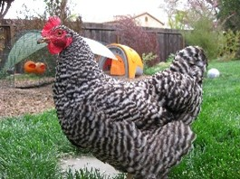
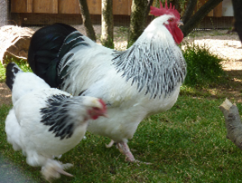
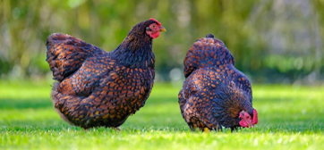
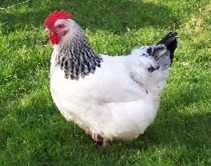
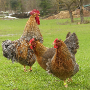
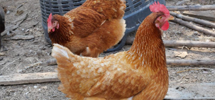

Möchest du wissen, welche Hühnerrasse du dir am besten anlegen solltest?
Wähle aus, welche Eigenschaften dir bei deinem Huhn wichtig sind.
Viele Hühnerrassen eignen sich gut für Anfänger, Familien oder
Selbstversorger. Sie sind meist robust, ruhig und legen regelmässig Eier.

Die Plymouth Rock stammt ursprünglich aus Amerika. Sie ist sehr robust, friedlich und fliegt kaum, weshalb ein niedriger Zaun oft reicht. Diese Hühner legen etwa 180 Eier im Jahr und sind auch im Winter noch gute Leger.

Die Sundheimer gelten als besonders sanft und gutmütig. Deshalb werden sie häufig als Familienhühner gehalten oder auch in Streichelzoos eingesetzt. Sie legen ungefähr 200 bis 220 Eier pro Jahr.

Die Barnevelder sind robuste Hühner und gute Futtersucher. Wenn sie genug Auslauf haben, finden sie im Sommer oft viel Futter selbst. Besonders bekannt sind sie für ihre grossen, dunkelbraunen Eier.

Die Sussex gelten als echte Allround-Hühner. Sie legen regelmässig Eier, sind sehr ruhig und werden schnell zahm. Ausserdem kommen sie gut mit Kindern und anderen Hühnern aus.

Das Bielefelder Kennhuhn ist eine robuste Rasse. Es legt etwa 230 Eier im Jahr und ist besonders kälteunempfindlich. Ausserdem suchen diese Hühner gerne selbst nach Futter.

Die Brown Nick sind Legehühner mit sehr hoher Eierproduktion. Sie können bis zu 300 Eier pro Jahr legen und sind ruhig und anpassungsfähig.